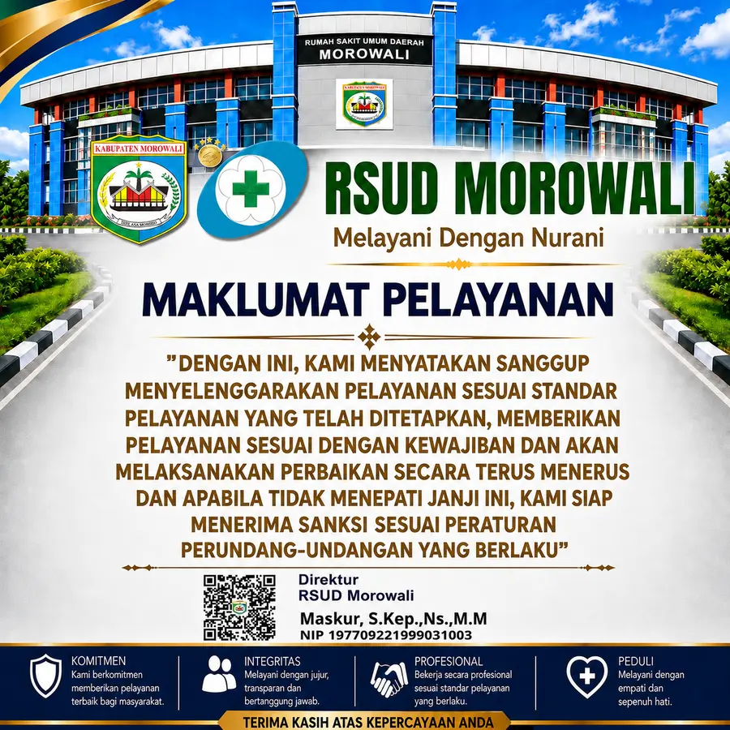
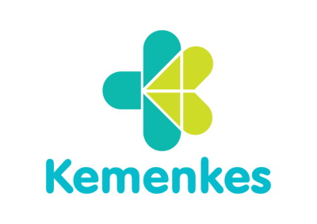

Selamat datang di RSUD Morowali!
Pelayanan kesehatan yang dekat, cepat, dan bisa dipercaya untuk warga Morowali
Langkah pelayanan rawat jalan
Empat langkah utama saat berkunjung ke RSUD Morowali, dari pendaftaran sampai pengambilan obat.
Pendaftaran
Ambil antrian dan daftar di loket atau APM.
Pemeriksaan
Menunggu giliran di poliklinik.
Konsultasi
Diperiksa oleh dokter.
Farmasi
Ambil obat di apotek.
Pendaftaran Pasien
Panduan resmi untuk pendaftaran poliklinik rawat jalan.
- Ambil nomor antrean online lewat daftar.rsud-morowali.id, lalu tunjukkan nomor antrean yang diperoleh ke petugas informasi.
- Wajib membawa KTP/NIK. Berkas pendukung lain seperti rujukan atau surat keterangan berobat sifatnya opsional.
- Wajib mengambil antrean lewat aplikasi Mobile JKN.
- Pastikan aplikasi Mobile JKN Anda sudah terdaftar dan terhubung sesuai data pasien.
Janji Layanan Kami
Komitmen resmi yang ditandatangani elektronik oleh Direktur RSUD Morowali kepada masyarakat.

“Dengan ini, kami menyatakan sanggup menyelenggarakan pelayanan sesuai standar pelayanan yang telah ditetapkan, memberikan pelayanan sesuai dengan kewajiban dan akan melaksanakan perbaikan secara terus menerus dan apabila tidak menepati janji ini, kami siap menerima sanksi sesuai peraturan perundang-undangan yang berlaku.”
Direktur RSUD Morowali
Maskur, S.Kep., Ns., M.M
- KomitmenKami berkomitmen memberikan pelayanan terbaik bagi masyarakat.
- IntegritasMelayani dengan jujur, transparan dan bertanggung jawab.
- ProfesionalBekerja secara profesional sesuai standar pelayanan yang berlaku.
- PeduliMelayani dengan empati dan sepenuh hati.
FAQ
Pertanyaan yang sering diajukan.
Bagaimana cara daftar poliklinik atau rawat jalan?
Ambil antrean online terlebih dahulu. Pasien BPJS Kesehatan wajib memiliki surat rujukan dari Faskes Tingkat 1/klinik/rumah sakit lain (atau surat kontrol dari RSUD Morowali), lalu mengambil antrean lewat aplikasi Mobile JKN. Pasien umum atau penjamin lainnya bisa mengambil antrean lewat website pendaftaran RSUD Morowali.
Sudah punya nomor antrean tapi tidak jadi berobat atau datang lewat dari jam pendaftaran, harus bagaimana?
Nomor antrean akan otomatis batal di sore/malam hari. Silakan ambil antrean kembali untuk hari berikutnya.
Jam berapa pendaftaran dan pelayanan buka?
Jam pendaftaran mulai 08.00–11.00 WITA, jam pelayanan poliklinik/rawat jalan mulai 08.00–14.00. Pasien tetap harus melalui loket atau APM (Anjungan Pendaftaran Mandiri) untuk bisa dilayani.
Bagaimana cara mendaftar ke IGD?
Pasien bisa langsung menuju IGD, atau lewat rujukan Faskes Tingkat 1/klinik, berlaku untuk pasien BPJS Kesehatan maupun umum. IGD buka 24 jam.
Saya dan keluarga bukan warga Morowali, apakah bisa berobat di sini?
Bisa. RSUD Morowali melayani semua elemen masyarakat. Untuk WNI cukup membawa KTP, untuk WNA cukup membawa kartu identitas lainnya. Untuk keluarga pasien yang butuh tempat tinggal sementara selama rawat inap, tersedia Rumah Singgah. Hubungi WhatsApp 0812-3456-789 untuk informasi lebih lanjut.
Bagaimana cara menyampaikan pengaduan atau keluhan?
RSUD Morowali menyediakan Kanal Pengaduan dan Komunikasi Masyarakat untuk menyampaikan pengaduan, keluhan, atau saran langsung kepada manajemen.
Punya Keluhan atau Saran?
Sampaikan pengaduan, keluhan, atau saran Anda kepada manajemen RSUD Morowali.
Mitra dan Kerja Sama RSUD Morowali
Bekerja sama dengan institusi terpercaya untuk memberikan pelayanan kesehatan terbaik kepada masyarakat.



Ulasan Pengunjung
Apa Kata Pengunjung Kami
[Ulasan pengunjung akan ditampilkan di sini]
[Ulasan pengunjung akan ditampilkan di sini]
[Ulasan pengunjung akan ditampilkan di sini]
[Ulasan pengunjung akan ditampilkan di sini]
[Ulasan pengunjung akan ditampilkan di sini]
[Ulasan pengunjung akan ditampilkan di sini]
Melayani Peserta BPJS Kesehatan
Wajib membawa surat rujukan dari Faskes Tingkat 1/klinik/rumah sakit lain (atau surat kontrol RSUD Morowali), lalu ambil antrean lewat aplikasi Mobile JKN sebelum ke loket rawat jalan.